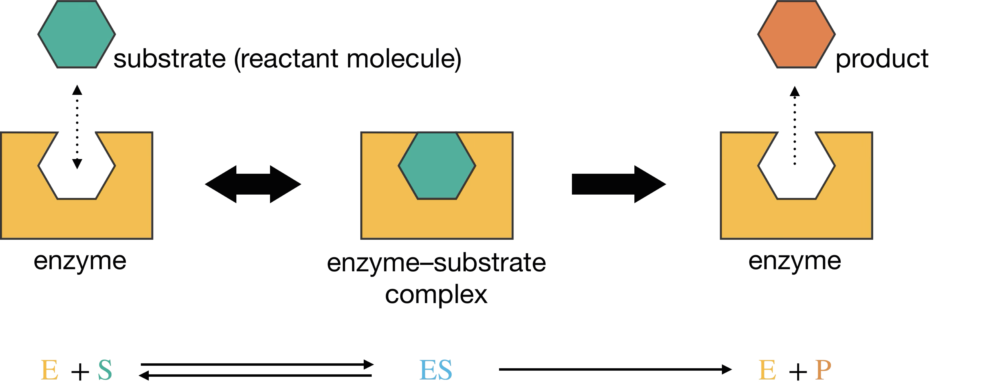
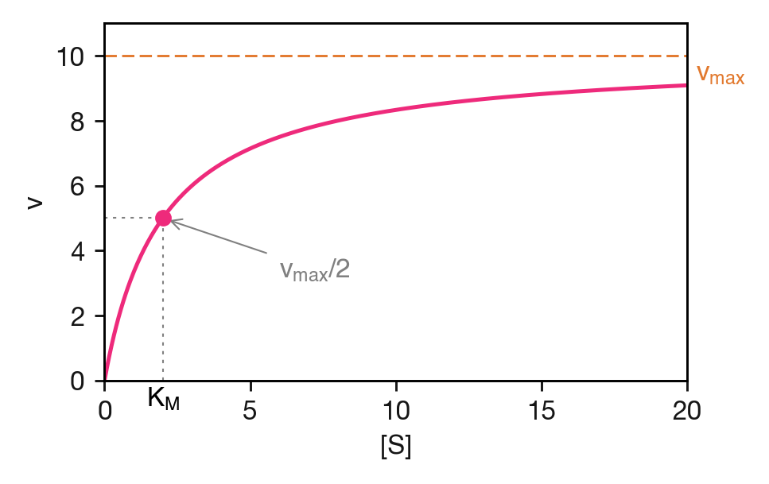
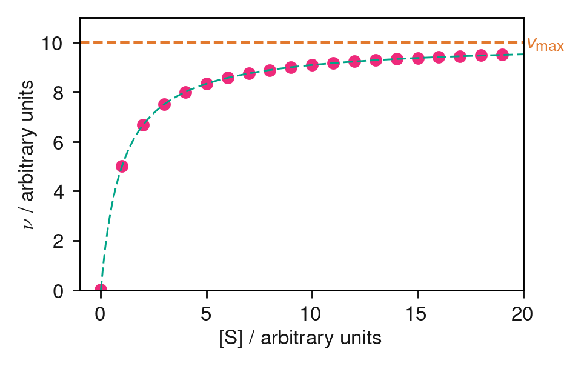
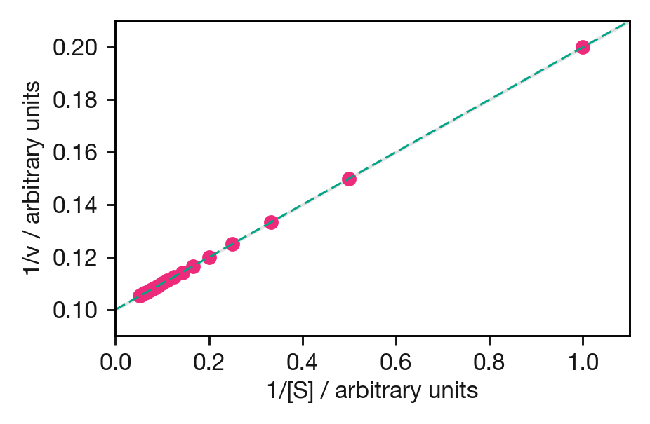
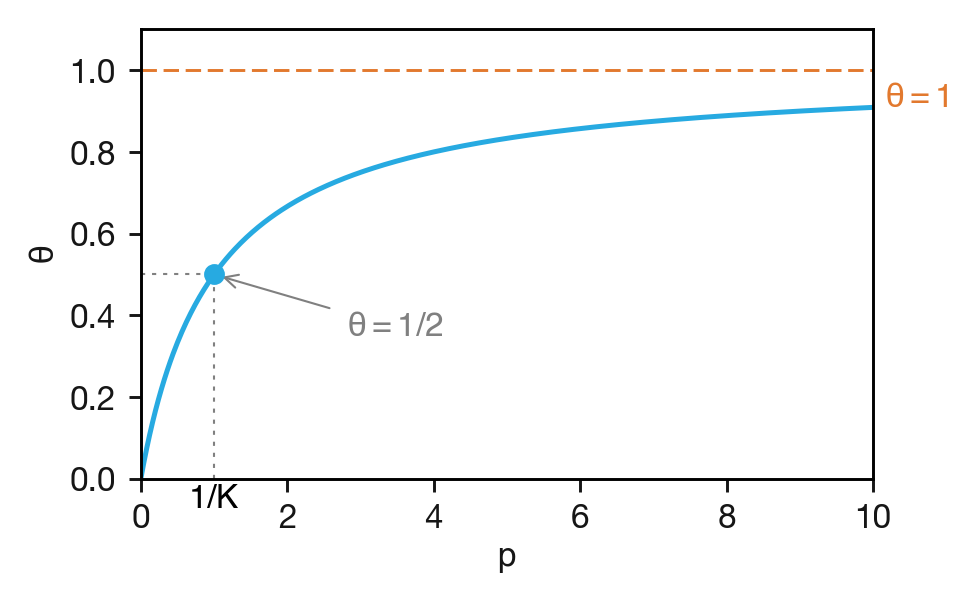

Lecture 8 Binding and Catalysis
The Lindemann mechanism showed how the SSA can explain pressure-dependent kinetics for gas-phase reactions. The same mathematical framework applies to a very different setting: the kinetics of binding. When a substrate binds to an enzyme, or a gas molecule adsorbs onto a surface, the resulting kinetics share a common mathematical structure — saturation kinetics — that arises from reversible binding to a finite number of sites.
8.1 Enzyme Kinetics
Enzymes are proteins that act as biological catalysts, dramatically accelerating reaction rates by lowering activation energies. Their three-dimensional structures create active sites: specific binding pockets where substrate molecules bind and undergo transformation into products. This specificity gives enzymes their remarkable selectivity, often catalysing just one reaction among many possibilities (Figure 8.1).

Figure 8.1: Schematic representation of enzyme-substrate binding. The enzyme’s active site accommodates the substrate molecule, forming the enzyme-substrate complex ES, which then converts to product P and regenerates the free enzyme.
8.1.1 The Michaelis–Menten Mechanism
The simplest kinetic model for enzyme catalysis treats the process in two steps: reversible binding followed by irreversible catalysis. The enzyme E binds reversibly to its substrate S, forming an enzyme–substrate complex ES, which then converts irreversibly to product P and regenerates the free enzyme:
\[\mathrm{E} + \mathrm{S} \underset{k_{-1}}{\stackrel{k_1}{\rightleftharpoons}} \mathrm{ES} \xrightarrow{k_\mathrm{cat}} \mathrm{E} + \mathrm{P}\]
This mechanism (first proposed by Victor Henri and refined by Leonor Michaelis and Maud Menten) involves three elementary processes — binding, unbinding, and catalysis — each with its own rate constant. The concentration of the enzyme–substrate complex changes because ES is formed by binding (rate constant \(k_1\)), destroyed by unbinding back to free enzyme and substrate (\(k_{-1}\)), and consumed by the catalytic step that produces product (\(k_\mathrm{cat}\)):
\[\begin{align*} \frac{\mathrm{d}[\mathrm{ES}]}{\mathrm{d}t} &= k_1[\mathrm{E}][\mathrm{S}] - k_{-1}[\mathrm{ES}] - k_\mathrm{cat}[\mathrm{ES}] \\ \frac{\mathrm{d}[\mathrm{P}]}{\mathrm{d}t} &= k_\mathrm{cat}[\mathrm{ES}] \end{align*}\]
The rate of product formation depends on \([\mathrm{ES}]\), which is difficult to measure directly. We need to express it in terms of experimentally accessible quantities.
8.1.2 Deriving the Michaelis–Menten Equation
In Lecture 5 we applied the SSA to reactive intermediates that are consumed almost as fast as they form, keeping their concentrations small. The enzyme–substrate complex ES is different: it can accumulate to significant concentrations, and may even account for most of the enzyme present.
The SSA still applies, however, because the catalytic step regenerates free enzyme — E is produced by the same reaction that consumes ES. This creates a cycle in which E and ES continually interconvert, and their concentrations settle into a steady state once the initial transient has passed. We also assume that substrate is in large excess over enzyme (\([\mathrm{S}] \gg [\mathrm{E}]_0\)), so that \([\mathrm{S}]\) remains effectively constant as the reaction proceeds. Setting \(\mathrm{d}[\mathrm{ES}]/\mathrm{d}t = 0\):
\[k_1[\mathrm{E}][\mathrm{S}] - (k_{-1} + k_\mathrm{cat})[\mathrm{ES}] = 0\]
Solving for \([\mathrm{ES}]\):
\[[\mathrm{ES}] = \frac{k_1[\mathrm{E}][\mathrm{S}]}{k_{-1} + k_\mathrm{cat}}\]
The expression contains three rate constants. To make the subsequent algebra easier to follow, we group the combination \((k_{-1} + k_\mathrm{cat})/k_1\) — which has units of concentration — into a single quantity called the Michaelis constant:
\[\begin{equation} K_\mathrm{M} = \frac{k_{-1} + k_\mathrm{cat}}{k_1} \tag{8.1} \end{equation}\]
With this definition, the SSA expression simplifies to \([\mathrm{ES}] = [\mathrm{E}][\mathrm{S}]/K_\mathrm{M}\).
This still contains \([\mathrm{E}]\), the free enzyme concentration, which is difficult to measure directly. We replace it using the enzyme conservation condition — the total enzyme concentration \([\mathrm{E}]_0\) is constant:
\[[\mathrm{E}]_0 = [\mathrm{E}] + [\mathrm{ES}]\]
Substituting \([\mathrm{ES}] = [\mathrm{E}][\mathrm{S}]/K_\mathrm{M}\) and solving for \([\mathrm{E}]\):
\[\begin{align*} [\mathrm{E}]_0 &= [\mathrm{E}] + \frac{[\mathrm{E}][\mathrm{S}]}{K_\mathrm{M}} = [\mathrm{E}]\left(\frac{K_\mathrm{M} + [\mathrm{S}]}{K_\mathrm{M}}\right) \\[6pt] [\mathrm{E}] &= \frac{[\mathrm{E}]_0\,K_\mathrm{M}}{K_\mathrm{M} + [\mathrm{S}]} \end{align*}\]
The rate of product formation is \(v = k_\mathrm{cat}[\mathrm{ES}] = k_\mathrm{cat}[\mathrm{E}][\mathrm{S}]/K_\mathrm{M}\). Substituting our expression for \([\mathrm{E}]\):
\[\begin{equation} v = \frac{k_\mathrm{cat}[\mathrm{E}]_0[\mathrm{S}]}{K_\mathrm{M} + [\mathrm{S}]} \tag{8.2} \end{equation}\]
This is the SSA rate equation for the Michaelis–Menten mechanism: the rate of product formation expressed entirely in terms of \([\mathrm{S}]\), the total enzyme concentration \([\mathrm{E}]_0\), and the rate constants (grouped into \(K_\mathrm{M}\) and \(k_\mathrm{cat}\)).
8.1.3 The Maximum Velocity
For a given experiment, \([\mathrm{E}]_0\) is fixed, and \(k_\mathrm{cat}\) is a property of the enzyme. Their product is therefore a constant that represents the maximum possible rate — achieved when every enzyme molecule is bound to substrate (\([\mathrm{ES}] = [\mathrm{E}]_0\)). We define the maximum velocity:
\[v_\mathrm{max} = k_\mathrm{cat}[\mathrm{E}]_0\]
Eqn. (8.2) then becomes the Michaelis–Menten equation:
\[\begin{equation} v = \frac{v_\mathrm{max}[\mathrm{S}]}{K_\mathrm{M} + [\mathrm{S}]} \tag{8.3} \end{equation}\]
8.1.4 Limiting Cases
The behaviour of the Michaelis–Menten equation is shown in Figure 8.2. Two limiting cases reveal the physical content of the equation.

Figure 8.2: The Michaelis–Menten curve: reaction velocity \(v\) as a function of substrate concentration \([\mathrm{S}]\). The substrate concentration at which \(v = v_\mathrm{max}/2\) equals \(K_\mathrm{M}\).
Low substrate (\([\mathrm{S}] \ll K_\mathrm{M}\)):
\[v \approx \frac{v_\mathrm{max}}{K_\mathrm{M}}[\mathrm{S}]\]
The rate is first order in \([\mathrm{S}]\). Most enzyme molecules are free, so doubling the substrate concentration doubles the rate of binding and hence the rate of product formation.
High substrate (\([\mathrm{S}] \gg K_\mathrm{M}\)):
\[v \approx v_\mathrm{max}\]
The rate is zero order in \([\mathrm{S}]\) — the enzyme is saturated. Every enzyme molecule already has a substrate bound, so adding more substrate cannot increase the rate. This is the hallmark of saturation kinetics.
At the crossover between these two regimes, where \([\mathrm{S}] = K_\mathrm{M}\), substituting into the Michaelis–Menten equation gives
\[v = \frac{v_\mathrm{max}\,K_\mathrm{M}}{K_\mathrm{M} + K_\mathrm{M}} = \frac{v_\mathrm{max}}{2}\]
This provides a convenient graphical method for estimating \(K_\mathrm{M}\): it is the substrate concentration at which the rate is half-maximal (Figure 8.2).
8.1.5 The Physical Meaning of \(K_\mathrm{M}\)
We defined \(K_\mathrm{M} = (k_{-1} + k_\mathrm{cat})/k_1\) as a notational convenience, and have now seen that it is the half-saturation concentration. But what does it represent physically?
The numerator, \(k_{-1} + k_\mathrm{cat}\), is the sum of the rate constants for the two processes that destroy the enzyme–substrate complex: dissociation back to E + S (rate constant \(k_{-1}\)) and catalytic conversion to E + P (rate constant \(k_\mathrm{cat}\)). The denominator, \(k_1\), is the rate constant for the process that forms ES. So \(K_\mathrm{M}\) is the ratio of ES breakdown to ES formation — a large \(K_\mathrm{M}\) means ES is destroyed faster than it is formed, requiring more substrate to achieve half-saturation.
When \(k_\mathrm{cat} \ll k_{-1}\) — that is, when the catalytic step is much slower than dissociation — the dominant pathway for ES breakdown is reversion to E + S. In this limit, \(K_\mathrm{M} \approx k_{-1}/k_1\), which is the dissociation constant \(K_\mathrm{d}\) of the ES complex. This is the pre-equilibrium limit we encountered in Lecture 4 and revisited in Lecture 5: the first step genuinely equilibrates before the slow step proceeds, and \(K_\mathrm{M}\) becomes a true binding constant. A low \(K_\mathrm{M}\) then directly indicates strong enzyme–substrate binding.
In general, \(K_\mathrm{M}\) also reflects how quickly ES converts to product, so it is a hybrid of binding and catalysis rather than a pure equilibrium constant. Nevertheless, the practical rule of thumb holds: a lower \(K_\mathrm{M}\) means the enzyme reaches half-maximal rate at a lower substrate concentration, which operationally indicates effective binding.
8.1.6 Determining Michaelis–Menten Parameters
To use the Michaelis–Menten equation in practice, we need values of \(v_\mathrm{max}\) and \(K_\mathrm{M}\). These are extracted from experimental measurements of \(v\) at different substrate concentrations.
Non-linear regression. The most reliable method is to fit the Michaelis–Menten equation directly to a plot of \(v\) versus \([\mathrm{S}]\) using computational least-squares fitting (Figure 8.3).

Figure 8.3: Simulated enzyme kinetics data (points) fitted to the Michaelis–Menten equation (dashed curve). The dashed horizontal line marks \(v_\mathrm{max}\). Non-linear least-squares fitting gives \(v_\mathrm{max}\) and \(K_\mathrm{M}\) directly.
Lineweaver–Burk plot. Taking the reciprocal of both sides of Eqn. (8.3):
\[\begin{equation} \frac{1}{v} = \frac{K_\mathrm{M}}{v_\mathrm{max}} \cdot \frac{1}{[\mathrm{S}]} + \frac{1}{v_\mathrm{max}} \tag{8.4} \end{equation}\]
A plot of \(1/v\) versus \(1/[\mathrm{S}]\) is linear, with slope \(K_\mathrm{M}/v_\mathrm{max}\) and \(y\)-intercept \(1/v_\mathrm{max}\) (Figure 8.4). While historically important, the Lineweaver–Burk plot has a practical drawback. At low \([\mathrm{S}]\), rates are small and therefore hard to measure accurately. Taking the reciprocal of a small, noisy number gives a large, even noisier number — and these are precisely the points that end up far to the right of the plot, where they have the most influence on the fitted line. The least reliable data points thus dominate the fit. Modern practice therefore favours non-linear regression when computational tools are available.

Figure 8.4: Lineweaver–Burk (double-reciprocal) plot of the same data as Figure 8.3. The reciprocal transformation magnifies errors at low \([\mathrm{S}]\) (high \(1/[\mathrm{S}]\)), giving those points disproportionate influence on the fit.
8.1.7 Catalytic Efficiency
We have already seen that \(v_\mathrm{max} = k_\mathrm{cat}[\mathrm{E}]_0\). Rearranging, \(k_\mathrm{cat} = v_\mathrm{max}/[\mathrm{E}]_0\): it is the rate at which a single, fully saturated enzyme molecule converts substrate to product. For this reason \(k_\mathrm{cat}\) is called the turnover number — it gives the maximum number of substrate molecules converted per enzyme molecule per unit time.
A more complete measure of efficiency combines binding and catalysis. Returning to the low-substrate limit, and substituting \(v_\mathrm{max} = k_\mathrm{cat}[\mathrm{E}]_0\), the Michaelis–Menten equation becomes:
\[v \approx \frac{k_\mathrm{cat}}{K_\mathrm{M}}[\mathrm{E}]_0[\mathrm{S}] \qquad \text{(when } [\mathrm{S}] \ll K_\mathrm{M}\text{)}\]
The ratio \(k_\mathrm{cat}/K_\mathrm{M}\) is called the specificity constant. It is the effective second-order rate constant for the reaction of free enzyme with free substrate, and captures both how well the enzyme binds its substrate and how quickly it turns over. The upper limit of \(k_\mathrm{cat}/K_\mathrm{M}\) is set by the rate at which enzyme and substrate molecules encounter each other by diffusion — approximately \(10^{8}\)–\(10^{9}\,\mathrm{dm}^3\,\mathrm{mol}^{-1}\,\mathrm{s}^{-1}\). Enzymes that approach this limit, such as catalase and carbonic anhydrase, are said to be diffusion-limited: every encounter leads to reaction.
You should be able to: Derive the Michaelis–Menten equation by applying the SSA to the enzyme–substrate complex and using the enzyme conservation condition. Identify the limiting behaviour at low and high \([\mathrm{S}]\), and explain the physical meaning of \(K_\mathrm{M}\), \(v_\mathrm{max}\), and \(k_\mathrm{cat}\).
8.2 The Langmuir Adsorption Isotherm
Enzyme kinetics describes binding at molecular active sites in solution. A closely related problem arises in surface chemistry: how does a gas adsorb onto a solid surface?
Consider a surface with a fixed number of equivalent adsorption sites. Gas molecules A can bind to (adsorb on) empty sites, and adsorbed molecules can desorb back into the gas phase:
\[\mathrm{A(g)} + \text{site} \underset{k_\mathrm{d}}{\stackrel{k_\mathrm{a}}{\rightleftharpoons}} \mathrm{A(ads)}\]
We define the fractional surface coverage \(\theta\) as the fraction of sites that are occupied (\(0 \leq \theta \leq 1\)). The rate of adsorption is proportional to both the gas-phase pressure \(p\) and the fraction of empty sites \((1 - \theta)\). The rate of desorption is proportional to the fraction of occupied sites \(\theta\):
\[\begin{align*} \text{Rate of adsorption} &= k_\mathrm{a}\,p\,(1 - \theta) \\ \text{Rate of desorption} &= k_\mathrm{d}\,\theta \end{align*}\]
At equilibrium, these rates are equal:
\[k_\mathrm{a}\,p\,(1 - \theta) = k_\mathrm{d}\,\theta\]
Expanding the left-hand side and collecting terms in \(\theta\) gives \(k_\mathrm{a}\,p = \theta(k_\mathrm{d} + k_\mathrm{a}\,p)\), so that
\[\begin{equation} \theta = \frac{K\,p}{1 + K\,p} \tag{8.5} \end{equation}\]
where \(K = k_\mathrm{a}/k_\mathrm{d}\) is the Langmuir adsorption constant, with units of inverse pressure. Because adsorption and desorption are a single reversible step, \(K\) is a genuine equilibrium constant — the ratio of forward and reverse rate constants, just as in the equilibrium treatment of Lecture 4. This contrasts with \(K_\mathrm{M}\), which is a hybrid of binding and catalysis rather than a true equilibrium constant. The resulting isotherm is shown in Figure 8.5.

Figure 8.5: The Langmuir adsorption isotherm: fractional surface coverage \(\theta\) as a function of gas pressure \(p\). The pressure at which \(\theta = 1/2\) equals \(1/K\).
8.2.1 Limiting Cases
Low pressure (\(K\,p \ll 1\)):
\[\theta \approx K\,p\]
The coverage increases linearly with pressure. Most sites are empty, so each additional gas molecule has many available sites to bind to.
High pressure (\(K\,p \gg 1\)):
\[\theta \approx 1\]
The surface is saturated — virtually every site is occupied. Increasing the pressure further has no effect on the coverage, because there are no more sites available.
At \(p = 1/K\), substituting into the Langmuir isotherm gives
\[\theta = \frac{K \cdot 1/K}{1 + K \cdot 1/K} = \frac{1}{2}\]
The Langmuir constant \(K\) thus plays the same role as \(1/K_\mathrm{M}\) in enzyme kinetics: it characterises the binding strength, and its reciprocal is the half-saturation pressure.
You should be able to: Derive the Langmuir adsorption isotherm \(\theta = Kp/(1 + Kp)\) by balancing the rates of adsorption and desorption, and describe the limiting behaviour at low and high pressure.
8.3 The Common Pattern: Saturation Kinetics
The Michaelis–Menten equation and the Langmuir isotherm describe very different physical systems — enzymes in solution and gases on surfaces — yet they share the same mathematical form. This is not a coincidence. Both arise from the same underlying mechanism: reversible binding to a finite number of sites.
| Michaelis–Menten | Langmuir | |
|---|---|---|
| Binding sites | Enzyme active sites | Surface adsorption sites |
| Species that binds | Substrate S | Gas molecule A |
| Key variable | \(v/v_\mathrm{max} = [\mathrm{S}]/(K_\mathrm{M} + [\mathrm{S}])\) | \(\theta = Kp/(1 + Kp)\) |
| Saturation | All enzyme bound (\(v = v_\mathrm{max}\)) | All sites occupied (\(\theta = 1\)) |
| Half-saturation | \([\mathrm{S}] = K_\mathrm{M}\) | \(p = 1/K\) |
| Low-concentration limit | First order in \([\mathrm{S}]\) | \(\theta\) proportional to \(p\) |
| High-concentration limit | Zero order in \([\mathrm{S}]\) | \(\theta\) independent of \(p\) |
The general pattern is: when the number of sites is limited and binding is reversible, the response (rate or coverage) increases with the concentration of the binding species but eventually saturates. This behaviour appears across chemistry and biology — from enzyme kinetics and surface catalysis to receptor–ligand binding and ion-channel gating.
Saturation kinetics also has a surprising consequence for surface reactions. When two species compete for the same adsorption sites, increasing the pressure of one reactant can decrease the overall reaction rate by blocking sites needed by the other. This leads to the counterintuitive phenomenon of negative reaction orders, discussed in Appendix C.
8.4 Key Concepts
- The Michaelis–Menten equation, \(v = v_\mathrm{max}[\mathrm{S}]/(K_\mathrm{M} + [\mathrm{S}])\), is derived by applying the SSA to the enzyme–substrate complex and using the enzyme conservation condition \([\mathrm{E}]_0 = [\mathrm{E}] + [\mathrm{ES}]\).
- At low \([\mathrm{S}]\) the reaction is first order (most enzyme is free); at high \([\mathrm{S}]\) it is zero order (enzyme is saturated).
- \(K_\mathrm{M} = (k_{-1} + k_\mathrm{cat})/k_1\) is the substrate concentration at which the rate is half-maximal. It is the ratio of ES breakdown to ES formation rate constants. In the pre-equilibrium limit (\(k_\mathrm{cat} \ll k_{-1}\)), \(K_\mathrm{M}\) reduces to the dissociation constant \(K_\mathrm{d}\).
- The Lineweaver–Burk plot (\(1/v\) vs \(1/[\mathrm{S}]\)) linearises the Michaelis–Menten equation, but modern practice favours non-linear regression.
- The specificity constant \(k_\mathrm{cat}/K_\mathrm{M}\) measures the overall catalytic efficiency of an enzyme, with an upper limit set by the diffusion-controlled encounter rate.
- The Langmuir adsorption isotherm, \(\theta = Kp/(1 + Kp)\), describes the fractional coverage of a surface as a function of gas pressure, where \(K = k_\mathrm{a}/k_\mathrm{d}\) is a genuine equilibrium constant.
- Both equations share the same mathematical form because both describe reversible binding to a finite number of sites — the defining feature of saturation kinetics.